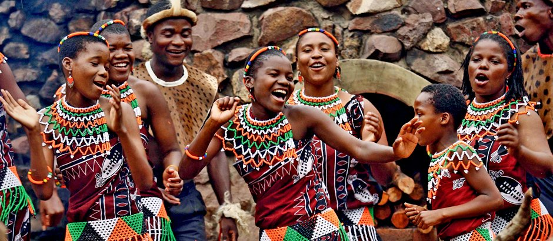

Cultura da África do Sul

A cultura sul-africana é extremamente rica, formada pela mistura de povos africanos, europeus e asiáticos.
Principais aspectos culturais
- Música tradicional como o Afropop e o Kwaito
- Aproximação com a natureza e os animais
- 11 idiomas oficiais e diversas etnias